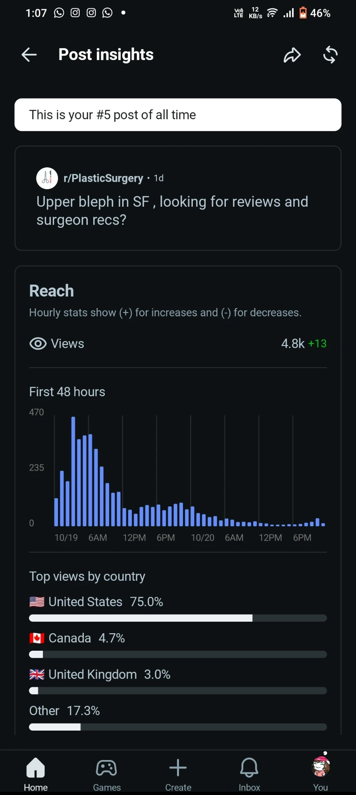

Reddit post insightsUpper bleph in SF, looking for reviews and surgeon recs
4.8KViews
25Keywords ranking
75.0%US audience
25in Discussions and forums1our comments in thread
01best bleph surgeon in San FranciscoView screenshot 02best bleph surgeon SFView screenshot 03best upper bleph surgeon Bay AreaView screenshot 04best upper blepharoplasty surgeon Bay AreaView screenshot 05upper bleph surgeon recs SFView screenshot 06upper bleph surgeon recs Bay AreaView screenshot 07bleph surgeon recs San FranciscoView screenshot 08bleph surgeon recommendations San FranciscoView screenshot 09bleph surgeon recommendations Bay AreaView screenshot 10recommend a bleph surgeon in San FranciscoView screenshot 11recommend a bleph surgeon in Bay AreaView screenshot 12best bleph surgeon in Bay AreaView screenshot 13best blepharoplasty surgeon in San FranciscoView screenshot 14best eyelid surgeon in San FranciscoView screenshot 15best eyelid surgeon in Bay AreaView screenshot 16bleph surgeon reviews San FranciscoView screenshot 17eyelid surgeon recommendations San FranciscoView screenshot 18upper bleph recommendations San FranciscoView screenshot 19upper bleph SF recommendationsView screenshot 20good bleph surgeon in San FranciscoView screenshot 21good blepharoplasty surgeon Bay AreaView screenshot 22San Francisco bleph surgery reviewsView screenshot 23blepharoplasty reviews San FranciscoView screenshot 24upper blepharoplasty reviews Bay AreaView screenshot 25eyelid surgery reviews Bay AreaView screenshot